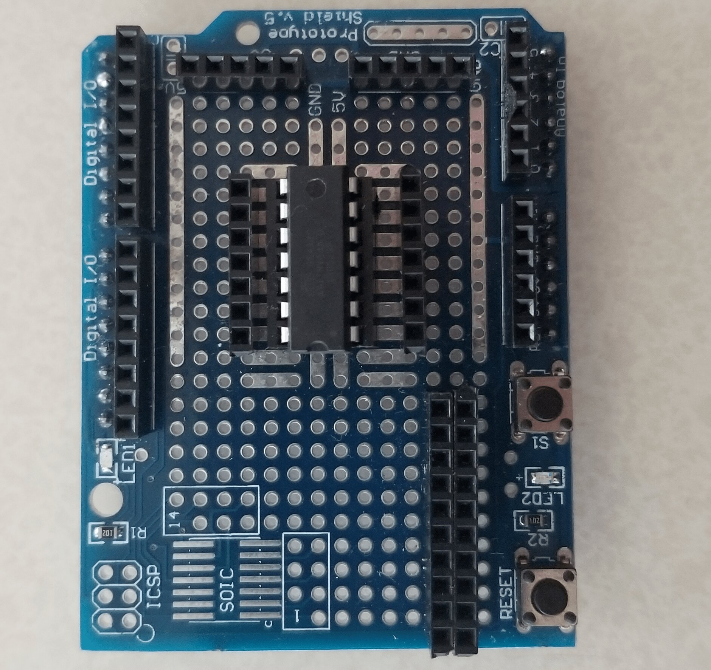
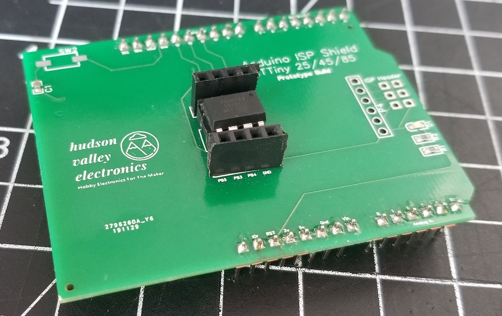

Designed November 2019 – Written May 26th 2020
Earlier in 2019 I had started on my capstone project for my B.S., my group and I were using the ATTiny84a AVR microprocessor. The processor is still one of my all time favorites, but at the time I didn't really know how to best program the chips. I created my own programming rig with one of the Arduino Prototype Shields that came with my Elegoo Uno kit. (See a picture of it below)

It was great, but it was missing something… I just wanted to place the IC in the socket and hit the program button. For the prototype shield version, I had to wire up the programming interface every time I wanted to program a chip. I didn't like that so much, so my solution was simple: I was going to design my own shield with the necessary breakouts to each Arduino pin for programming in a PCB.
By the time I had gotten to sit down and work on the shield, I had found the massive community behind the Tiny85 and I had decided to make this programmer for that over the 84a. I think it turned out well and I will be listing these for sale on my other website. Purpose and Intended Use This is a programming breakout shield for the ATTiny85 AVR Microprocessor. All you have to do is plug in the shield to your Arduino Uno compatible, insert the Tiny85 into the IC socket in the middle of the board, setup the correct settings for the ATTinyCore board package, and hit upload.
This was the second major PCB I've designed and it was one of the first ones I've designed that worked without any issues. I used EasyEDA and a project template a user uploaded to make Arduino Uno shields. The board layout is simple, I've only included a reset button, an LED indicator light to show that the device is connected properly, an 8 pin DIP socket for the Tiny85 to be programmed and taken out, and some breakout pins connected to the socket. If you want to, you can test your program while it is connected to the programmer. See below a picture of the final design.

Making this was fun and a cool first real PCB design project. I'd love to have other chips able to be programmed on this board, that would be a good idea for version 2 if I ever get around to doing that. I think this is a useful product and I may make a small batch and sell them. This design is open source, check the Gitub page for it.
Over and out, Richard
© 2020 - Richard Martino